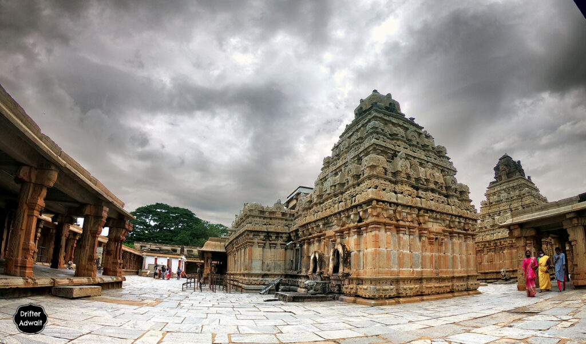
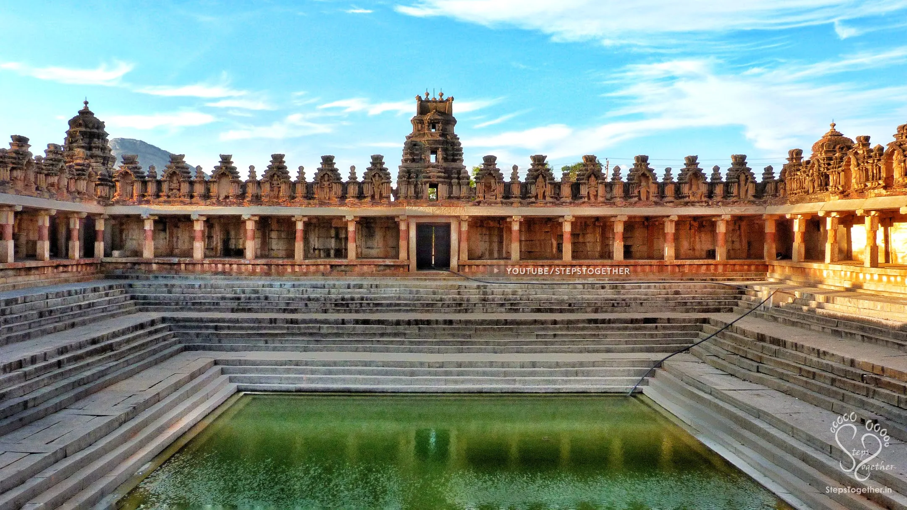

Bhoga Nandishwara Temple


Bhoga Nandishwara Temple
Bhoga Nandeeshwara Temple is a Shiva temple located in Nandi village, at the foot of Nandi Hills (or Nandidurga) , in Chikkaballapur district of Karnataka state .
The original temple in this complex is considered one of the oldest temples in Karnataka, dating back to the early 9th century. According to the Archaeological Survey of India, the construction of this Shiva temple is mentioned in the inscriptions of the Nolamba dynasty king Nolambadhiraja and the Rashtrakuta king Govinda III dated 806 CE, and in the copper plates of Jayateja and Dattiya of the Bana dynasty dated around 810 CE .
The temple was later patronized by the Ganga dynasty , Chola dynasty , Hoysala dynasty and Vijayanagara empires of South India .
In the post-medieval era, local chieftains of Chikkaballapur and rulers of the Mysore Empire ( Hyder Ali and Tipu Sultan ) controlled the area before it finally came under British rule after Tipu Sultan's death in 1799 CE .
The architectural style is Dravidian . [ 1 ] The temple is located 60 km from Bangalore . [ 2 ] The Archaeological Survey of India has protected the temple as a monument of national importance.
The temple complex has two large shrines: the "Arunachaleswara" shrine built by the Gangas of Talakad to the south, and the "Bhoga Nandiswara" shrine built by the Cholas to the north.
It houses a statue of the king, believed to be a sculpture of Rajendra Chola. In the middle is a Kalyana Mantapa known as the "Uma-Maheshwara" shrine , which has a pillar carved in black stone, the gods Shiva and his consort Parvati , the creator Brahma and Saraswati , the preserver Vishnu and his consort Lakshmi , the fire god Agni and his consort Swahadevi, and decorative vines and birds. This is typical of Hoysala architecture.
According to art historian George Mitchell, the temple is a 9th–10th-century Nolambar construction, with pilasters on the outer walls of the shrines, decorative stone windows with perforated panels containing figures, and a dancing Shiva idol on the south wall of the Arunachaleswara shrine. Durga stands on the head of Mahisha on the north wall of the Bhoga Nandeeshwara shrine.
Pyramidal and tiered shikhara gopurams are present in both main shrines. Each main shrine has a large linga in the sanctum sanctorum . The mantapa facing the shrine has a sculpture of Nandi.
According to Mitchell, during the 16th century Vijayanagara period, a mantapa with elegant pillars was added between the two main shrines.
The pillars, made of grey-green granite, bear sculptures of the maidservants of the household. Mitchell believes that during the reign of the Gowdas of the Yelahanka dynasty after the Vijayanagara rule, a smaller "Uma-Maheshwara" temple was added between the two main temples.
The smaller temple has a procession of deities and sages on the wall. The wall connecting the two main temples was cleverly constructed so that it is indistinguishable from the two original temples. A large pillared hall was also added in front of the two main temples.
The "Arunachaleshwara" and "Bhoga Nandeeshwara" forms of Shiva represent, according to Hindu mythology, two stages in Shiva's life, childhood and youth.
The "Uma-Maheshwara" temple has carvings depicting the third stage of Shiva's marriage with Goddess Parvati. Therefore, newlyweds come to this temple to seek blessings.
The Yoga Nandeeshwara temple on the Nandi hills represents the final "sacrifice" stage in Shiva's life and is therefore free from any festivals.
Each of the larger temples has a sanctum sanctorum , a sukanasi and a navaranga or mantapa . The verandah and the hall are provided with stone screens with perforations. Each temple has a Nandi mantapa with a Nandi facing the sanctum sanctorum in front .
The outer wall or prakara of the complex contains two small shrines to the goddess , [ 1 ] to the north of the shrines is a second enclosure with a navaranga mantapa with Yali pillars .
Beyond this enclosure is the temple pond (Kalyani or Pushkarani), locally known as "Sringeri Theertha" (the mythical source of the Pinakini River), where lamps are lit on certain festival days.